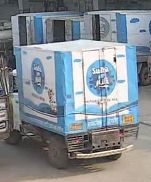

Editing a detector without training
Abhinav Gautam · 7 November 2026

The product found five of the eight vehicles on this weighing bridge. I wanted to know how far a stock detector on a dairy's 95 cameras can be improved without training it, by editing its weights and its graph and by deciding better on its boxes. The rule was that every change is measured on the site's own frames, before and after.
Merging the vehicle rows
The class head is a 128→80 matrix per pyramid level. This rear-facing pickup at Site 2 scored 0.26 as a truck and 0.03 as a car. The product takes the largest class score, so it saw 0.26 and rejected the box at its cut-off of 0.28. The edit folds the five vehicle rows into one score before the top-300 and reports it as class 7. The same cell now scores 0.28, and the box is kept.

Counting what stays
The product counted boxes per frame. A person dipping to 0.30 for one frame vanished and came back, and a far-off person was sometimes answered with two boxes at IoU 0.98, both counted. The decision layer keeps a track that starts at the product threshold down to 0.20, counts it after two sightings, holds it 1.5 s after the last, and drops same-kind duplicates at IoU 0.9 for people (46 of 55 such pairs on a quiet camera were one person twice) and 0.7 for vehicles.
Vehicles had a second duplicate that IoU does not catch. The merged model would box a tanker and also its cab, or a group box round a tanker and the van beside it. A part box lies at least 80 % inside a stronger box; a group box holds two boxes that are each 80 % inside it and apart from each other. Both are dropped. On the yard clips this fixed 118 wrong frames and left about 52.
Lowering the cut-off per camera
With the merge in, what the detector still missed on the yards sat at scores 0.10 to 0.28. On the yard clips that band was about 90 % real trucks; across all 104 cameras on 436 daylight frames it was 0.61. So the lower cut-off is set per camera, and only where the measurement says so. Eight small ignore zones round fixed offenders (a window, crate stacks, a hose, a wall sliver) took the false objects on the 14 candidate cameras from 11 to 3.
All 31 judged cameras, with a 404-frame rerun on the same day for the 14
| Camera | Frames | Gained | Real | Dup | False | Precision, before → after zones | False/day, before → after | Rerun precision (frames) | Yard mode |
|---|

What exactly was changed
The vehicle merge, in the graph
At each pyramid level a 1×1 convolution model.23.one2one_cv3.{l}.2 (128→80) gives the class logits. Reshape_3..5 and Concat_1 lay them out as [1,80,8400], /model.23/Sigmoid makes probabilities, Concat_3 joins them to the decoded boxes, and Transpose → Split → ReduceMax → TopK(300) → GatherElements → TopK keeps the 300 anchors with the largest best-class score. The merge inserts seven nodes directly after the sigmoid, so the top-300 already sees the merged score.
surgery/Gather takes rows vehicle_idx = [1,2,3,5,7]; Sub, ReduceProd and Sub compute 1 − ∏(1 − p); MulInto places it on row 7 through into_mask; MulKeep zeroes the five rows through keep_mask; Add joins the two.A max over the five rows could never raise a score; three weak votes from classes that are near-independent for a truck rear should. Rows 1, 2, 3 and 5 are set to zero rather than left, because the product drops a vehicle box that overlaps a vehicle of another class, and with those rows at zero no such pair can exist.
The livery as a head row
The class-head weights model.23.one2one_cv3.{l}.2.weight are [80,128,1,1]. The livery row is a second 1×1 Conv (surgery/Row{l}, one 128-d weight) over the same feature tensor, then an AveragePool (surgery/Pool{l}, 3×3 at stride 16, 7×7 at stride 32, padded) because a livery is the whole box: a single cell's feature was at chance, the pooled one was not. The pooled margin is concatenated to the 80 logits before each level's reshape, with Constant_3, Constant_16, Constant_19 and the Split widths moved to 81.
The first version Sliced the truck logit out of the conv output and Added it to the margin, so class 80 was truck plus livery. That could lift a weak fragment of a livery truck above the product's floor, and on one test frame it added fragment boxes. The version that stands is a relabel: the margin row is scaled by 20 so that after the sigmoid row 80 holds a gate, and ten nodes (surgery/Relabel*) split the vehicle score by it. No box can score more than the site model gave it.
g = σ(20·m), class 80 = v·g, class 7 = v·(1 − g)
The row itself is closed-form: per level, d = (C + λ·tr(C)/128·I)−1(μlivery − μother) on the pooled head features of the labelled crops, λ = 1, offset at the midpoint of the two class means.
Held out by site, the head row reached 0.81 at stride 16 (3×3 window, 174 crops) and 0.83 at stride 32 (7×7 window, 115 crops); fitting on mid-depth or neck features instead did no better in my refit across levels (0.72 against 0.71 for the head). The head features are what the detector uses to tell a truck from a bus, and the channels that fire on a blue cab fire on coloured-cab tankers too; at night there is no colour at all. The row that ships instead lives in the search model's space: a 512-d unit direction and an offset of −0.039 against the image embedding the cutout search already stores, fitted the same way (LDA, λ = 1) on 319 crops from 16 sites with the quantised vision model and an 8 % box margin. Held out by site it is right 0.875 of the time (14 false, 26 missed), and at ingest it costs one dot product.
Fire
Same mechanism, no base class (on_top_of=None): class 80's logit is the pooled margin alone, so it can create boxes. Positives are cells at the centre of labelled fire and smoke boxes from public pictures, at the level that fits the box, window 5. Negatives are the pictures' non-fire cells and every step-th cell of 353 of the site's own frames. The cut-off sits at the 1 − 10−4 quantile of the site cells: a frame has 8,400 cells, so even that rate is close to one false cell per frame. Hard negatives, all cells of night and infrared frames plus bright warm cells (window mean above 0.55, R − B above 0.08), weighted 3× in the fit, did not help.
The one alarm on an unseen frame was a sodium lamp at Site 8. The flicker rule that would have handled it in the decision layer is short, and untested on real fire video.
alarm at frame t if class-80 box present on the last 5 frames (IoU ≥ 0.2 chain)
and (centre moved ≥ 0.25 of its size or width/height changed ≥ 0.25
or score ranged ≥ 0.15) # a lamp is static; a flame is not
Not deployed.
Spill
The same head row on level 2 with a 3×3 window, LDA with λ = 10, negatives from the dry clip of the same camera and from other cameras' floor cells, cut-off above every negative the fit saw. Fitted on the first half of the one event, it finds the spill in 92 % of the later frames with 2 alarms on 412 frames from cameras it never saw. The search model's crop embedding does better (0.99 recall, 1 of 412) but has to be handed the region first.
Input size
resize_input changes the input to s×s, rewrites the attention blocks' baked reshapes ([1,4,128,400] and […,20,20] become s/32), and regenerates the anchor grids /model.23/Constant_12 and Constant_13 ([1,2,8400], cell centres at +0.5) and the stride vector Constant_14. Convolutions are size-free. At 512 the model is a third faster and loses 8 % of people and 20 % of vehicles. Rejected.
What is code, and what is becoming graph
Not weights: the dedup thresholds (person 0.9, vehicle 0.7), the nested rule (0.8 inside, members at 0.15 of the area), the yard cut-off of 0.12, the ignore zones, persistence (two sightings, 1.5 s hold) and the 2×2 tiling. Dedup and the nested rule are built as a graph stage after the top-300 (bake_postprocess): pairwise intersections over the 300 rows by broadcast Min/Max/Sub/Mul, containment as intersection over area, kind masks by Equal/Or, the group test as a MatMul of the member mask with the apart mask, a Where that zeroes dropped scores, then NonMaxSuppression per kind on what survives. output0 stays [1,300,6]; a dropped row keeps its place with score 0. It is tested in the repository and not yet in the deployed file.
People at the far end
Running the full frame plus a 2×2 grid of overlapping crops and merging boxes at IoU ≥ 0.5 finds people that are a few pixels tall at 640; the tiles contribute people only, since their vehicles were fragments of trucks the full frame already had.
What did not work
| Tried | Measured | |
|---|---|---|
| Input 512 px | A third faster; −8 % people, −20 % vehicles | rejected |
| INT8 dynamic quantisation | 10 MB not 38, but 207 ms against 111 ms, 60 % count agreement | dropped |
| Livery row in the detector's features | 0.81 to 0.83 held out by site | replaced |
| Fire row, closed form | Half of held-out fire images at one false alarm in 367 frames | parked |
Finding the dairy's own trucks
The dairy's trucks carry a blue-and-white livery. Each box the detector draws is already embedded by the search model, so the livery class is a direction in that space. Here are the 319 labelled crops, projected to two dimensions.

Site 7, a coloured-cab tanker. Its box is a vehicle and is not tagged: margin -0.11.

Site 1, a labelled livery truck, tagged: margin +0.13.
Checking the cameras themselves
Nine checks with no model: each frame reduced to 320×180 and a few statistics, judged against the camera's own frames nearest in time. On the first night one site had fogged domes and two channels returning coloured bands.


One spill
In five days of frames there was one milk spill, on the tanker pad at Site 6 from 14:05 to 14:28 on 4 November. A floor-change scanner put the frame on a review sheet; the stream was two pixels wide at the scanner's resolution and I found it by eye. One event is enough to measure separability and not enough to measure anything else.

Open questions
The yard table is one daylight day, with one to nine frames per camera on the first pass.
The livery prototype misses mostly at night; its held-out number comes from 16 sites with a few dozen crops each.
The fire row's held-out sets are public pictures, and it sees half of them.
The spill row has seen one spill.
None of it needs training, and all of it waits on more frames.
Every number above was produced by a script against the site's own frames, with the before and after of each change run on the same frames. Faces, on-screen captions and timestamps in the pictures are blurred.